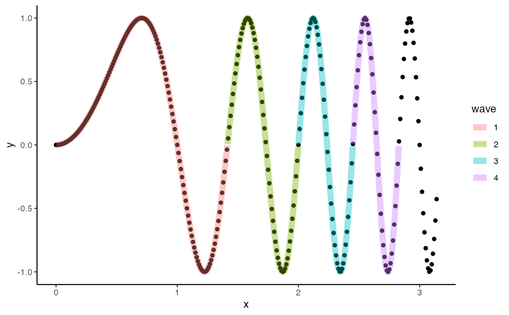
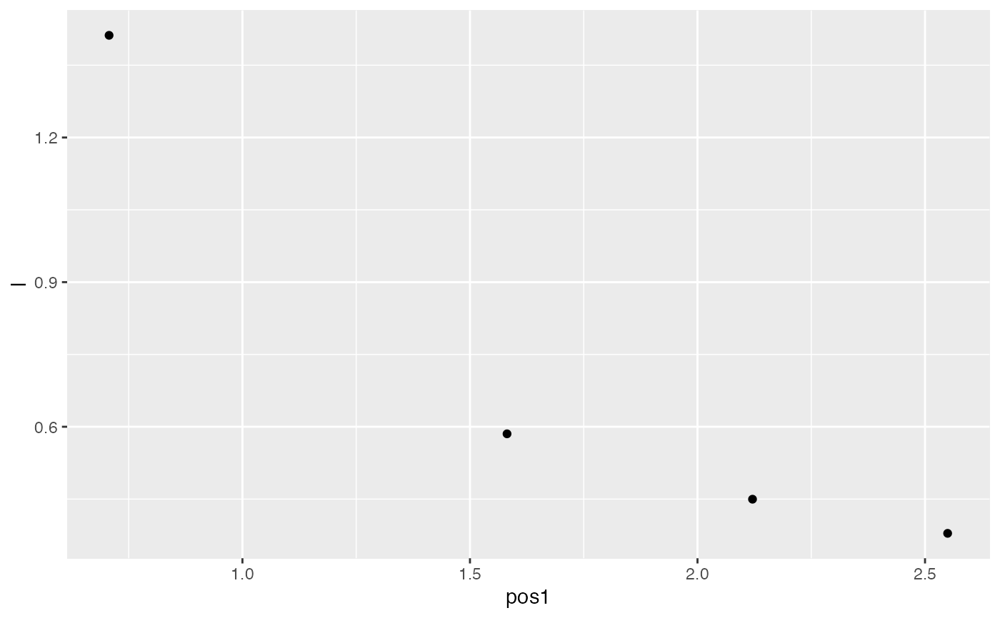

Compute wavelengths from a sine-like waveform
wave.RdComputes full wavelengths and their positions and amplitude from a sine-like waveform based on either peak-to-peak, trough-to-trough, or internodal distance.
wave( x, y, method = "zeros", zero.begin = TRUE, fit = TRUE, dens = 10, smooth = 0.1, smoothing = "loess" )
Arguments
| x | numeric; x position |
|---|---|
| y | numeric; y position |
| method | character; how waves should be found and classified, where it crosses zero/the internodal length ("zeros"), peak to peak ("p2p") or trough to trough ("t2t"). See Details. |
| zero.begin | logical; does wave begin at zero? Default is 'TRUE' and will help find waves beginning at first x,y values if y=0 |
| fit | logical; if 'method="zeros"', should zeros be detected by a fitting operation. See Details. |
| dens | numeric; factor by which to increase the sample density used in fitting when 'method="zeros"'. See Details. |
| smooth | numeric; if |
| smoothing | character; the smoothing method when 'fit=TRUE', either 'loess' or 'spline'. See Details. |
Value
A list with the following components:
method the method chosen to find full waves
names a data table with columns 'x', 'y', and 'wave' describing the x and y positions of the wave and a numeric name of each wave detected, respectively. If 'method="zeros"' and 'fit=TRUE', these values reflect the predicted, more dense data as determined by smoothing, smooth, and dens.
dat a data table describing each wave detected.
'zeros': x value where y crosses zero. Returns NA if
methodis 'p2p' or 't2t', value is NA.'wave.begin': x value where each wave begins.
'wave.end': x value where each wave ends.
'begin.index': x index of where each wave begins.
'end.index': x index of where each wave ends.
'wave': numeric name of each wave.
'l': the length of each wave.
'amp1': the peak amplitude of each wave. If method is set to 'p2p' or 't2t' this is the begin amplitude. If "method='zeros'" this is the peak amplitude between internodes.
'amp2': If method is set to 'p2p' or 't2t' this is the end amplitude. If "method='zeros'" this is the minimum amplitude between internodes.
'pos1': If method is set to 'p2p' or 't2t' the x position of begin amplitude for each half wave and identical to 'begin'. If "method='zeros'", the position of peak amplitude between the internodes.
'pos2': If method is set to 'p2p' or 't2t' the x position of end amplitude for each half wave and identical to 'end'. If "method='zeros'", the position of minimum amplitude between the internodes.
If 'method="zeros"' and 'fit=TRUE', these values reflect the predicted, more dense data as determined by smoothing,smooth, and dens.
Details
If 'method="p2p"' or 'method="t2t"', full waves are found using critical points (i.e., local maxima, the peaks or minima, the troughs) with features.
If 'method="zeros"' and 'fit=TRUE', zero crossings are determined by first increasing the sample density by a factor determined by dens. A more dense loess or smooth.spline model is then fit to the data and new y values predicted. Wave positions and lengths are determined based on these predicted values. This option should be useful when the sampling density of the waveform is relatively low and therefor detected wave positions and zero crossings (the internodes) may be rather coarse.
See also
features, loess, smooth.spline
Examples
require(ggplot2) #Find length of the full waves x <- seq(0,pi,0.01) y <- sin(x^2*pi) #zero method w.z <- wave(x,y,method="zeros",smoothing="spline",smooth=0.1) #plot wave with detected full waves using fitted 'zeros' method p <- ggplot()+geom_point(aes(x=x,y=y)) p <- p+geom_line(data=w.z$names,aes(x=x,y=y,col=wave),alpha=0.4,size=3,inherit.aes=FALSE) p+theme_classic()